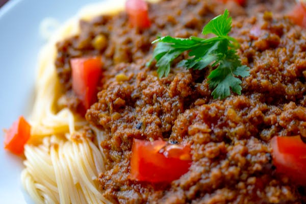

100 gram pancetta atau bacon, dipotong kecil-kecil
2 butir telur
50 gram keju Parmesan, parut
Garam dan merica hitam secukupnya
1 siung bawang putih, cincang halus (opsional)
1 sendok makan minyak zaitun
2. Siapkan Pancetta/Bacon: Panaskan minyak zaitun di wajan besar.Tambahkan pancetta atau bacon dan masak hingga renyah. Jika suka, tambahkan bawang putih cincang dan tumis hingga harum.
3. Buat Saus: Dalam mangkuk besar, kocok telur dan tambahkan keju Parmesan parut. Bumbui dengan sedikit garam dan merica hitam.
4. Campur Semua: Tambahkan spaghetti yang sudah ditiriskan ke wajan berisi pancetta. Matikan api, lalu tuangkan campuran telur dan keju ke atas spaghetti. Aduk cepat hingga semua tercampur rata dan saus menjadi creamy.
5. Sajikan: Sajikan segera dengan taburan merica hitam tambahan dan keju Parmesan jika diinginkan.
Pasta Carbonara
Bahan-bahan
200 gram spaghetti100 gram pancetta atau bacon, dipotong kecil-kecil
2 butir telur
50 gram keju Parmesan, parut
Garam dan merica hitam secukupnya
1 siung bawang putih, cincang halus (opsional)
1 sendok makan minyak zaitun
Instruksi
1. Spaghetti: Rebus spaghetti dalam air yang banyak dengan sedikit garam hingga al dente. Tiriskan dan sisihkan.2. Siapkan Pancetta/Bacon: Panaskan minyak zaitun di wajan besar.Tambahkan pancetta atau bacon dan masak hingga renyah. Jika suka, tambahkan bawang putih cincang dan tumis hingga harum.
3. Buat Saus: Dalam mangkuk besar, kocok telur dan tambahkan keju Parmesan parut. Bumbui dengan sedikit garam dan merica hitam.
4. Campur Semua: Tambahkan spaghetti yang sudah ditiriskan ke wajan berisi pancetta. Matikan api, lalu tuangkan campuran telur dan keju ke atas spaghetti. Aduk cepat hingga semua tercampur rata dan saus menjadi creamy.
5. Sajikan: Sajikan segera dengan taburan merica hitam tambahan dan keju Parmesan jika diinginkan.